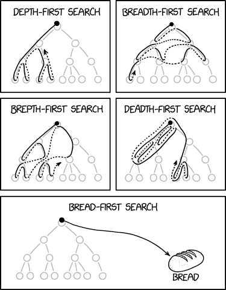
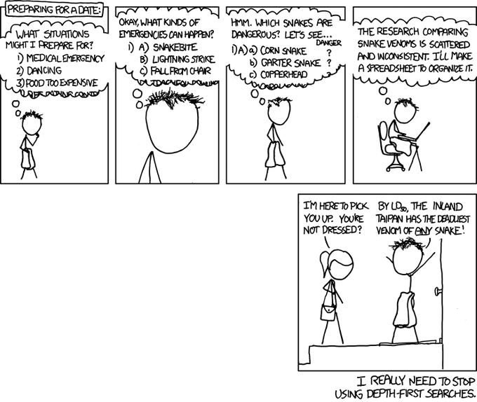

Navigating Graphs
Background
So far, we have been exploring graphs with an emphasis on visiting all the edges: we want to cross all our bridges, draw every line that there is, and so on. Now we will switch gears and obsess over visiting vertices instead. While the language in our conversation will implicitly assume that the graphs in question are undirected, everything we say here can be easily adapted to directed graphs as well. The pseudocode presented here is for graphs on n vertices with vertex labels ranging between 0 and n-1 (inclusive).
To illustrate, let us go way back in time to when Facebook was a thing. You start off by making your Facebook account, and making friends with everyone you know. Now, as a part of your preparations for the apocalypse1, you want to make a list of everyone who you believe is accessible to you: these are people who are your friends, of course, but also friends of your friends, because you trust your friends to put you in touch with their friends if you need it; but now we can extend this confidence to friends of those who are friends of your friends, and so on. To make the “and so on” bit explicit, let us define the set of people you can access as follows:
- your friends on Facebook are accessible;
- if person
Ais accessible and personBis a Facebook friend ofA, thenAis also accessible.
So: how do you go about making this list? This is a good time to take a pause and work it out.
Spread Out
Well, one natural way — at the risk of looking like a stalker — is the following. Let us call people on Facebook new if they are not yet on our list. To begin with, everyone is new and our list is empty. Also assume that all names are distinct2. Our list will spawn several notebooks, and we will build it up as follows.
on day 1, make a list of all your friends on Facebook in a notebook called
Volume 1.on day 2, go to the profiles of everyone you have listed in
Volume 1. For each person, go through their friends list, and make a list of everyone who is new to you inVolume 2.on day 3, go to the profiles of everyone you have listed in
Volume 2. For each person, go through their friends list, and make a list of everyone who is new to you inVolume 3.
on day t, go to the profiles of everyone you have listed in
Volume t-1. For each person, go through their friends list, and make a list of everyone who is new to you toVolume t. Stop if the new volume is empty.
Notice that it is crucial that you only list people who are new to you. Consider an example where all of Facebook is three people: you and your friends Akash and Babita, who are friends with each other as well. Now Akash and Babita make it to Volume 1, but on day 2, if you are not careful about listing only new people, you will:
- add Babita to
Volume 2based on Akash’s list, and - add Akash to
Volume 2based on Babita’s list.
Now, since Volume 2 is the same as Volume 1, it will spawn an identical Volume 3, and this will go on ad infinitum, which is not what we want!
How long does it take to build up the whole list of accessible people, if all of Facebook has N people and everyone has at most D friends? Assume that you can figure out — when looking at a profile — whether it is new or not. This is not terribly unrealistic: for example, your browser typically tells you if you have visited a page before or not by coloring the links purple instead of blue, at least in the early days of Facebook.
You should convince yourself that the process above indeed:
- lists everyone who is accessible,
- does not list anyone who is not accessible, and
- terminates pre-apocalypse assuming that Facebook is finite.
Taking a Deep Dive
Now, suppose that you are going to attend a hypothetical Facebook party: all the first 1729 users will be there, and in particular, you will get to meet your seven friends as well. Now you want to say hi to everyone who’s accessible, and maybe get them to sign your slam book too: but you haven’t finished building your list yet!
So how do you go about discovering all the accessible people? Well, you do what people do at networking events3 — you ask to be introduced to someone you have not met already. Start by approaching a friend, who will introduce you to one of their friends, who may or may not be a mutual: but you move on to said friend regardless, who will in turn introduce you to someone else, etc.
In particular, let us proceed4 as follows:
Go to an arbitrary friend `X`.
Repeatedly do the following:
Declare under your breath that you have met `X`.
Ask X to introduce you to a friend of theirs
(whom you have not yet met).
if X introduces you to Y:
Y is the new X.
else X has nothing new to offer:
EXIT PARTY.Clearly, everyone you meet this way is accessible, but do you get to meet everyone who is accessible?
Suppose you have a friend Ravi who knows both Seeta and Geeta, but Seeta and Geeta do not know each other. To begin with, you meet Ravi and say Ravi introduces you to Seeta. Seeta knows nobody whom you have not yet met, so you leave without meeting Geeta, but she was accessible! Had Ravi introduced you to Geeta instead, then you would have missed meeting Seeta with the approach above.
Pause and think about how you can fix your procedure so that you meet everyone who is accessible.
One way to expand the scope of people we meet at the party is by not giving up so early: specifically, if you meet someone who observes that you have already met all their friends, then you have a dead end, but for all you know you are just stuck in a local minima. You need to pull yourself up and keep looking — and there are a few different possibilities that you could experiment with here:
- find another OG friend you have not met at the party and restart the process above
- find a random person at the party to restart the process above
- go back to the last person you were speaking with and continue the process above
Note that with approach (1), you would still miss meeting either Seeta or Geeta in the example above, so while it’s a perfectly valid approach it may still fail to be comprehensive.
The issue with approach (2) — apart from the fact that it may not be well-suited to introverts — is that you might end up meeting and listing people who are not, in fact, accessible.
So let’s try approach (3), which you can think of as retracing your steps backward whenever you are stuck:
Go to an arbitrary friend X.
Repeatedly do the following:
Ask X to introduce you to a friend of theirs
(whom you have not yet met).
if X introduces you to Y:
Remember that X introduced you to Y.
Declare that you have met Y.
Y is the new X.
else X has nothing new to offer:
Who introduced you to X?
Nobody: EXIT PARTY.
It was Z: Z is the new X.As before, you should convince yourself that the process above indeed:
- ensures you meet everyone who is accessible,
- does not have you meet anyone who is not accessible.
Further, you can also show that you exit the party before the party exits you: in other words, the process above does not go on forever. Why is this?
Well, notice that you never meet someone for the first time more than once, so the if block inside Repeatedly triggers at most 1728 times.
Now lets talk about the else block inside Repeatedly. Let us say that you get “stuck at someone” if they have nothing new to offer. Now we claim that you never get stuck at someone more than once. To see this, lets put ourselves in the shoes of someone — say 💃 — attending this party and largely minding their own business. From their perspective, a novice networker — say 🕺 — keeps approaching them to meet new people. They meet this person some k times: perhaps they hope that k is zero, but if they are not so lucky, then the meetings pan out as follows.
- The first meeting is when someone introduces 🕺 to 💃.
- Now 💃 introduces 🕺 to P_1, a new person.
- The second meeting is when 🕺 backtracks from P_1 back to 💃.
- Now 💃 introduces 🕺 to P_2, a new person.
- The third meeting is when 🕺 backtracks from P_2 back to 💃.
- Now 💃 introduces 🕺 to P_3, a new person. \vdots
- The k^{th} meeting is when 🕺 backtracks from P_{k-1} back to 💃.
- Now 💃 has nobody left to introduce 🕺 to.
Note how all meetings but one are fruitful in that they lead to further progress, and it is only the last meeting where one gets stuck and backtracks from 💃. In other words, you never get stuck at the same person more than once, so the else block inside Repeatedly triggers at most 1728 times. So given a sufficiently long party, we will indeed build our lists in time.
Recap: The Two Ways
So we have evidently figured out two ways of exploring the part of the graph accessible from a particular location. These belong to a family of graph traversal algorithms, dubbed Whatever-First-Search by Erickson, and can be generically described as follows:
Whatever-First-Search(s):
put s into the bag
while the bag is not empty:
take v out of the bag
if v is unmarked
mark v
for each edge vw
put w into the bag
Recall that the notion of accessibility is recursively defined, so for many people it is most natural to think of the algorithms also as being recursive. In particular, it’s either:
- ping all your friends, rinse, repeat, or
- go to a friend, rinse, repeat;
keeping in mind that — in the spirit of recursion — when you are rinsing and repeating, you re-identify yourself as whoever you are working with currently, and also take care to ensure that you don’t end up going in circles forever by remembering what you have already seen and making good use of that intel.
Exploring Wikipedia
Imagine that you open up Wikipedia’s featured article today, and it happens to be about Operation Flavius. Call this page P, and let’s say that another page Q on Wikipedia is reachable from P if you can arrive at Q by starting at P and following links that are visible on whatever the current page is. To make a list of all pages reachable from P, you can start with P as the current page and then either:
- open up all blue links visible on the current page in background tabs, close the current page, and process the next tab similarly; or,
- open the first blue link you see on the current page, and keep doing this, hitting the back button when you hit a page with no blue links.
The background tab hoarder is browsing breadth-first, while the distracted clicker is browsing depth-first :) With all this intuition collected, let us now describe professional-looking implementations for these algorithms and argue their correctness.

Paths and Connectivity
We now turn to some definitions that are standard in graph theory. A path is a non-empty graph P=(V, E) of the form
V=\left\{x_0, x_1, \ldots, x_k\right\} \quad E=\left\{x_0 x_1, x_1 x_2, \ldots, x_{k-1} x_k\right\},
where the x_i’s are all distinct.
The vertices x_0 and x_k are linked by P and are called its ends; the vertices x_1, \ldots, x_{k-1} are the inner vertices of P.
The number of edges of a path is its length, and the path of length k is denoted by P^k.
If P=x_0 \ldots x_{k-1} is a path and k \geqslant 3, then the graph C:= P+x_{k-1} x_0 is called a cycle.
The distance d_G(x, y) in G of two vertices x, y is the length of a shortest x-y path in G; if no such path exists, we set d(x, y):=\infty.
The greatest distance between any two vertices in G is the diameter of G, denoted by \operatorname{d}(G).
A non-empty graph G is called connected if any two of its vertices are linked by a path in G. If U \subseteq V(G) and G[U] is connected, we also call U itself connected in G. A maximal connected subgraph of G is a connected component of G.
Given a vertex s in a graph G, we may want to know:
- the size of the connected component that s belongs to;
- the set of all vertices in the connected component that s belongs to;
- the distance between s and t for some vertex t \neq s;
- if s belongs to a cycle in G.
It turns out that navigation algorithms can help us address all these questions and then some.
Breadth-First Search
Breadth-first search maintains an evolving state of visited vertices. A vertex that is not yet upgrades itself to visited status if it is adjacent to a visited vertex. So we iteratively update the set of visited vertices — starting with just s as per tradition — by having the current set of visited vertices pull in their neighbors, and stop when there is nothing new to see.
Letting visited denote a set of vertices in the global scope, one round of this process might look like this:
execute_one_round():
marked = {}
for all v in visited:
for all u in N(v):
if u is not in visited:
add u to marked
visited = visited U markedand now we keep going until we have nothing new to see:
visited = {s}
while true:
prev = visited
execute_one_round()
if prev == visited:
exitNote that if working with a graph on n vertices as input, the while loop will run at most n times, and execute_one_round takes at most O(n^2) time, so overall we have an implementation that is straightforward but suffers a running time of O(n^3) overall.
A Faster Implementation
Notice that we are wasting time by pinging all visited vertices in every round: notice that only the new inductees are going to help with discovery — so we can save time by only focusing on them. This is what we did with the notebooks earlier: we only scanned volume t-1 in round t to develop volume t.
The most natural way of tracking the volumes efficiently is to use a queue: we begin by adding the starting point, and in general, pop elements off the queue. As we do that, we add any unvisited neighbors offered by the popped element back at the end:
visited[v] = -1 for all v
visited[s] = 0
add s to head of Q
while Q is non-empty:
v = pop(Q) //remove the head of Q
for u in N(v):
if visited[u] is -1:
visited[u] = visited[v] + 1
push (Q,u)Now you might figure this to be an O(n^2) algorithm based on the fact that the while loop and the inner for loop run at most n times each, but you can in fact argue that the running time is bounded by O(n+m).
To see this, notice that the line u in N(v) is executed twice for every edge (p,q): once when p is at the head of the queue and once when q is at the head of the queue. Also notice that every vertex gets pushed on the queue at most once, so the line v = pop(Q) is executed at most n times. This gives us a tighter and neater upper bound of O(n+m). 🎉
We now argue that the procedure above sees exactly what it is supposed to see: nothing more and nothing less. Not only that: the visited array that we sneaked in tracks the “volume numbers” from the notebooks analogy, and in fact records distances from the starting point.
Lemma. For finite d, any vertex u is at a distance of d from s if and only if visited[u] = d.
Consider the case of finite d. For both statements, we argue by induction on d. We omit the base cases because they are easy to verify.
First, suppose visited[u] = d. Then:
- by the mechanics of the algorithm, there is a vertex
vsuch that:u in N(v)andvisited[v] = d-1, and
- by the induction hypothesis, the distance of v from s is d-1.
The claim follows by adding u to the (d-1)-length path from s to v guaranteed by the induction hypothesis.
Now, suppose u is at a distance of d from s. Then there is a path P of length d from s to u, and this is a shortest path. Let u’s neighbor on this path be v. Notice that the sub-path P that starts at s and ends at v is a shortest path between s and v — if not, then we could plug the edge (v,u) at the end of a hypothetical shorter path, say Q, to contradict the assumption that u is at a distance of d from s.
Apply the induction hypothesis on v to see that visited[v] = d-1. Notice that when v is popped from the queue, the visited array has values between -1 and d (inclusive). At this point, it must be the case that visited[u] = -1 or visited[u] = d: if not, then by previous claim, we again contradict our assumption about the distance of u from s. Now:
- if
visited[u] = d, we are done, and - if
visited[u] = -1, then v pulls u into the queue andvisited[u] = dafter this step, so we are done again.
Note that this implies that vertices unreachable from s are not visited.
Corollary. We have that d(s,u) = \infty if and only if visited[u] = -1.
Depth-First Search
A Depth-First Search mainly involves:
- a way of discovering new univisted neighbors so we can go forward
- a way of remembering where we came from to be able to backtrack
The first is easily achieved by the use of a visited array again, and for the second, we introduce a prev array that can help us find our way back to where we came from. Here is an implementation that closely follows the description of the algorithm we discussed earlier. We throw in a clock variable and birth and death arrays for some extra bookkeeping that will help us remember the timing of our first and final encounters with the vertices that we meet as we go along.
for all v: prev[v] = -1
//prev[v] = -1 iff v is unvisited
current = s
prev[s] = s
clock = 0
while true:
clock = clock + 1
X = unvisited_neighbor(current)
// this returns -1 if X has no univisited neighbors
// and an arbitrary unvisited neighbor otherwise
If X is not -1:
// we have discovered a new thing
// lets remember where we came from:
prev[X] = current
// record the time of discovery:
birth[X] = clock
// and then go to this new place:
current = X
Else:
// i.e, X has no new neighbors to offer
If X == s:
// we are back where we started
// and we are done:
break
Else:
// we know where to go
// step back to make progress:
set current to prev[current]
// note that we are done with X:
set death[X] = clockTo analyze the running time here, we need to know how unvisited_neighbor() is implemented. Let us work with the adjacency list representation, and let’s say that for every vertex v, we have a pointer pv that initially points to the head of the adjacency list of v. Now consider the following implementation of unvisited_neighbor(), where we are using pv.vertex to denote the neighbor of v that pv is pointing to:
unvisited_neighbor(v):
while prev[pv.vertex] != -1:
if pv->next is NULL:
return -1
else:
pv = pv->next
return pv.vertexConsider the number of times the line:
X = unvisited_neighbor(current)is executed. Observe that this is bounded by the total amount of “movement” experienced the pointers pv, where the totaling is being done over all vertices v. Since the pointers always shift further along the adjacency lists, and the total length of all the adjacency lists put together is the sum of the degrees of all the vertices, we can bound the total amount of work by twice the number of edges.
Also observe that the if and else blocks can be triggered at most n times each since they correpsond to our first and last visits to a vertex, respectively.
Therefore, the overall running time of the algorithm is O(m+n), just like it was with breadth-first search.
Also, as with breadth-first search, we can see that we visit exactly the vertices we are supposed to: the set of visited vertices coincides with the set of vertices reachable from s. First, we make note of the following invariant:
Lemma. For every vertex u, if prev[u] > -1 and v is a neighbor of u, then prev[v] > -1.
The intuition for this invariant is the following: once a vertex is “born”, we do not let it “die” until all its neighbors are visited. A visited vertex keeps feeding the algorithm its unvisited neighbors, thereby prolonging its own lifespan, until it runs out.
Somewhat more formally, suppose prev[u] > -1 and, for the sake of contradiction, say prev[v] = -1 for some neighbor of u. Since prev[u] > -1, the line:
X = unvisited_neighbor(current)is executed with current being u at least once.
Since prev[v] = -1 at the end of the algorithm, note that prev[v] = -1 throughout the algorithm. However, none of the calls to unvisited_neighbor(u) could have possibly output v, since this would immediately lead to prev[v] being overwritten with u.
From this we can only conclude that unvisited_neighbor(u) was dysfunctional: u had an unvisited neighbor v that was not returned by any of the calls to unvisited_neighbor(u), which is the desired contradiction.
Lemma. For every vertex u, d(s,u) = \infty if and only if prev[u] = -1.
We first show that if prev[u] = -1 then d(s,u) = \infty, the contrapositive of which is that everything reachable is visited.
Suppose prev[u] = -1 but d(s,u) = d for some finite d. Then there is a path P from s to u of length d. Let v be the first vertex on this path for which prev[v] = -1, and let w be the previous vertex on the path; in other words, w is the nieghbor of v in P whose distance from s is the smallest.
By assumption, prev[w] is not -1, implying that w was in fact visited by the algorithm. However, if w is visited, then the mechanics of the algorithm ensures that all neighbors of w are visited as well (see above), and in particular, so is v. However, this contradicts our assumption that prev[v] = -1.
We now show that if d(s,u) = \infty then prev[u] = -1, the contrapositive of which is that everything visited is reachable.
Let us, in fact, establish the contrapositive: prev[u] > -1 implies that there exists a finite d for which d(s,u) \leqslant d. The intuition here is that we can climb our way back to s from u following the previous pointers. We need to be sure that the previous pointers always exist and don’t send us around in cycles.
In particular, consider the following sequence of previous pointers:
prev[u], prev[prev[u]], prev[prev[prev[u]]], …
Consider the value of the clock when prev[u] is set: this coincides with birth[u]. Let us associate with prev[u] the time birth[u].
Now, suppose prev[u] is v. Note that prev[u] = v implies that u is an unvsited neighbor of v, where v itself is a visited vertex. Therefore, prev[v] is also well-defined and associated with birth[v]. We can repeat this argument for every step of the sequence, noting that the clock value strictly decreases at every step: and hence the sequence must reach s, at which point we can truncate it.
It is also easy to check that the vertices in the sequence are distinct: if not, we will have to contend with time travel! For instance, say:
prev[a] = bandbirth[a] = pprev[b] = candbirth[b] = qprev[c] = aandbirth[c] = r
Note that p > q > r, so c was introduced by a at a time when a was not even visited, which is impossible. This argument is easily complicated completed with generic subscripts, an exercise we leave to the reader.
Following the sequence backwards gives us the desired path, and its length is (loosely) upper bounded by birth[u], and we are done. 🎉

Show that for any two vertices u and v, the intervals (birth[u],death[u]) and (birth[v],death[v]) are either such that one is strictly contained in another, or are fully disjoint.
Let us say that a vertex v is alive when the clock value is T if:
T>birth[v]andT<death[v].
Suppose further that you were working with a directed graph. Show that if, when you visit a vertex u for the first time, there is an edge from u to some vertex v that is alive then, there is a cycle that contains u and v. Is it true that if a directed graph has a cycle, then you will have an edge of this form: one from a vertex newly visited to one that is alive?
Protip: Google for backedges if you are trying to look this up!
References
Footnotes
Who knows what — and who — may come in handy.↩︎
In practice, every profile has an unique ID, so the actual names do not matter: what is important is that we can easily verify, when we are exploring a profile, if it is new or not.↩︎
Or at least what the author thinks people do at networking events.↩︎
Don’t try this at an actual party.↩︎